Available for Opportunities
LOUIS
SUNGWOO
CHO
ITS Consultant
Advancing Intelligent Transportation Systems for Smart Cities and Transit-oriented Development.
Advancing Intelligent Transportation Systems for Smart Cities and Transit-oriented Development.
I'm an ITS Consultant at the Chicago Department of Transportation via Alrek Business Solutions, combining traffic engineering with AI to build smarter, safer mobility systems.
At UIUC's Department of Civil and Environmental Engineering, I developed trajectory planning algorithms using Deep Reinforcement Learning and computer vision, calibrated CAV control policies with genetic algorithms, and deployed ROS-based systems on physical autonomous vehicles at the Illinois Center for Transportation.
Recipient of the Charles E. DeLeuw Scholarship, I conducted a field study in South Korea analyzing KTX, SRT, GTX, and urban transit networks — translating insights into actionable proposals for U.S. High-Speed Rail.
Civil Engineering — Transportation
University of Illinois at Urbana-Champaign
Civil Engineering — Transportation
University of Illinois at Urbana-Champaign
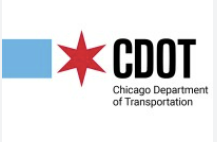
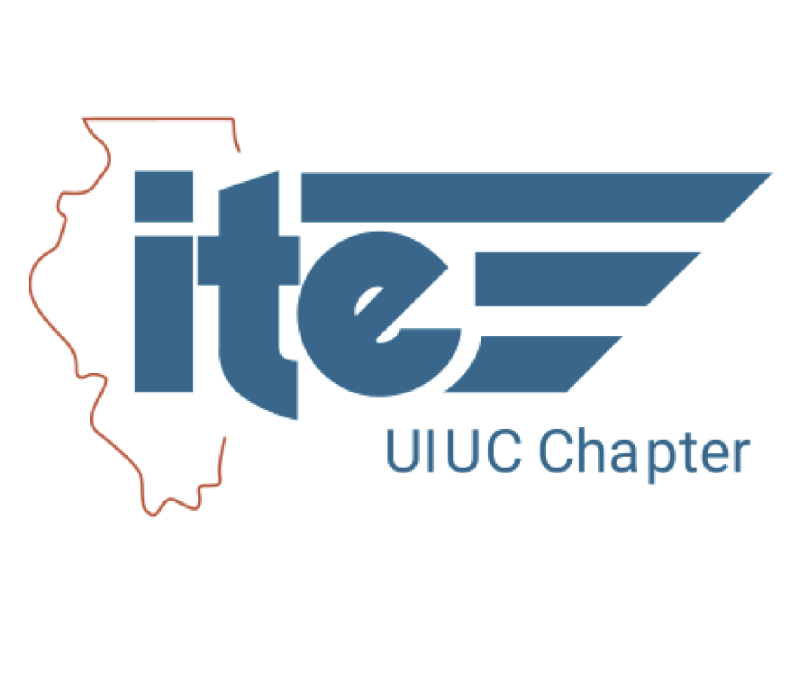
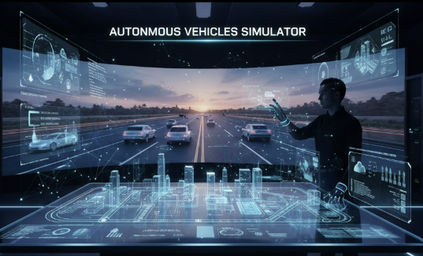
Master's thesis research at the UIUC Department of Civil and Environmental Engineering. Calibrated control spacing models (constant spacing, constant time headway, IDM) using genetic algorithms. Deployed ROS-based trajectory planning on a physical AV at the Illinois Center for Transportation. Simulated mixed-autonomy traffic to demonstrate stop-and-go shockwave reduction with CAV penetration.
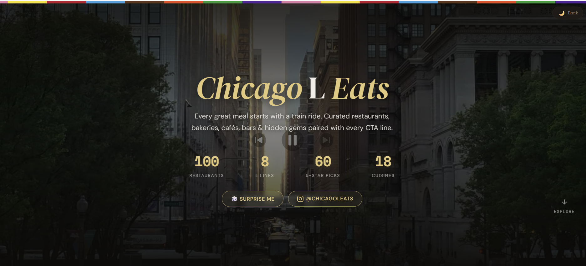
Chicago restaurant recommendations and reviews along the iconic Chicago L lines curated by Louis Sungwoo Cho local Chicagoans and first-time visitors.
Maximized autonomous Tesla vehicle performance across CARLA race tracks. Implemented and compared RRT, Potential Field-based Steering, and End-to-End models for safe high-speed navigation and obstacle avoidance.
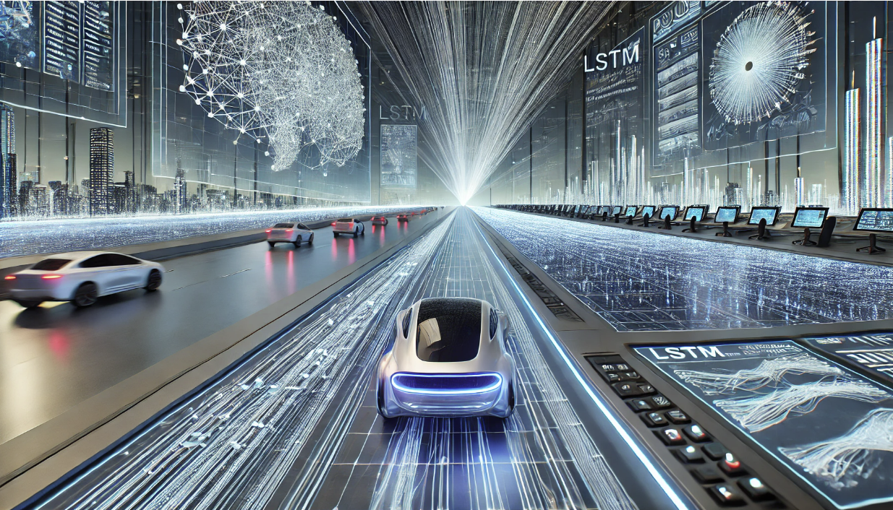
LSTM-based Convolutional Social Pooling framework for vehicle trajectory re-identification in occluded and low-visibility environments. Hyperparameter tuning and temporal feature engineering to improve model robustness.
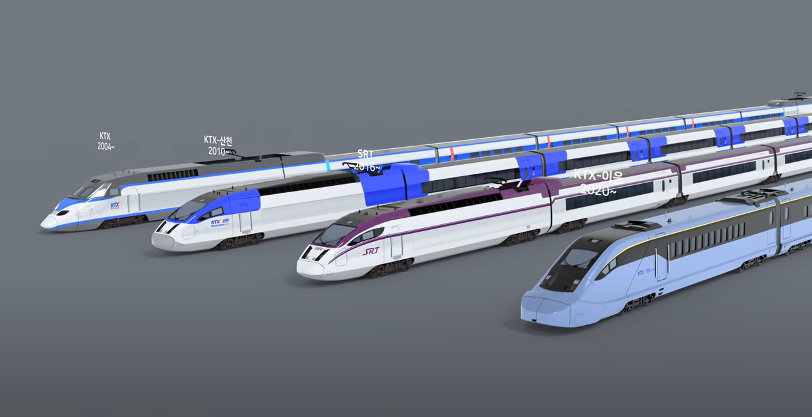
Deep Learning pipeline for South Korean high-speed train image classification using Convolutional Neural Networks.
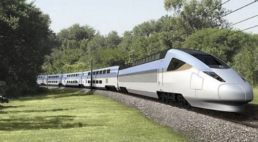
Chapter-wide case study analyzing HSR corridor viability between Chicago and St. Louis. Route modeling, ridership estimation, and alignment comparisons to recommend development pathways.
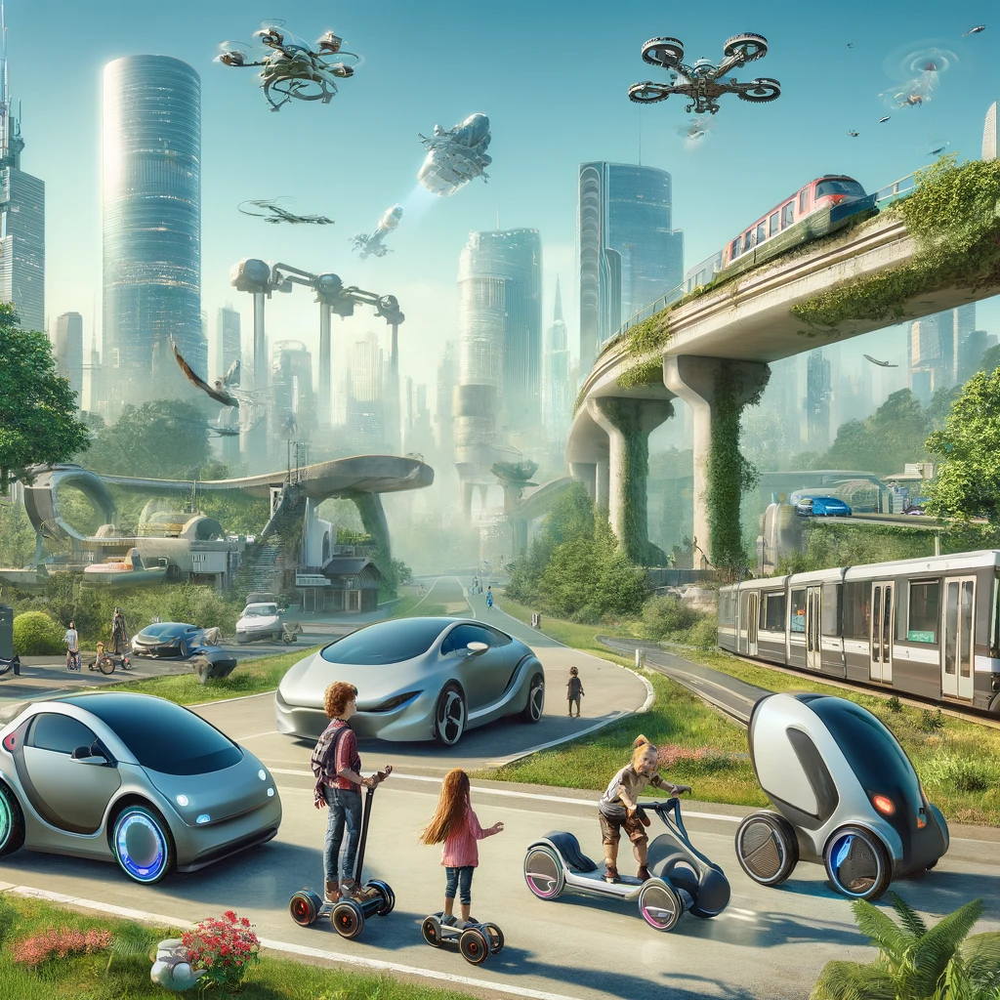
Led a 6-member team applying time-series forecasting to Champaign-Urbana bus ridership trends for transit planning. CAD designs of High-speed Rail, Maglev, eVTOL, UAV, and BRT systems plus AI-powered time-series forecasting for public transit planning. Won Outstanding Exhibit Award (3rd of 200+ projects) at UIUC Engineering Open House 2024.
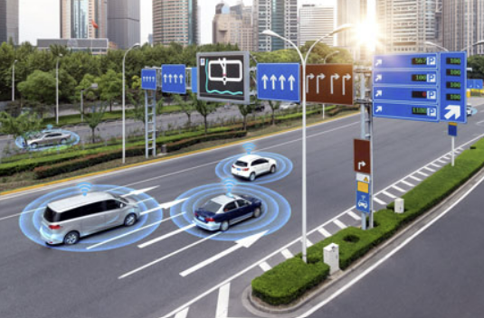
Co-developed AutoVerse-AI for AV controller verification. Parsed and cleaned OpenDRIVE / ASAM road geometry files for simulation integration, enabling safety performance evaluation under diverse scenarios.
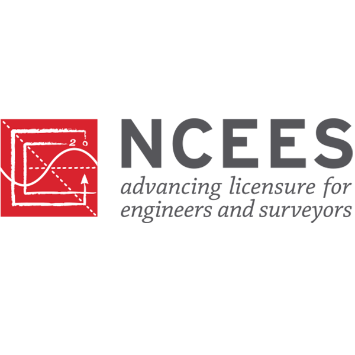
Civil Engineering licensure issued by the National Council of Examiners for Engineering and Surveying, State of Illinois.
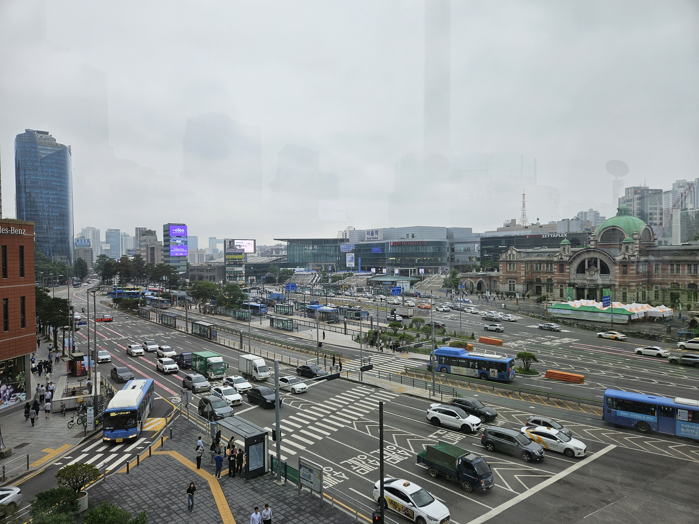
Awarded to outstanding civil engineering students to study urban transit systems abroad. Conducted field research in South Korea analyzing KTX, SRT, GTX, and urban networks.
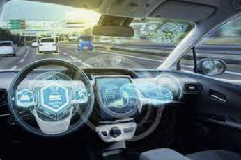
Top 3 of 200+ projects for a mobility exhibit covering HSR, Maglev, eVTOL, BRT, and AI-driven time-series forecasting for transit planning.
Faculty-selected award recognizing leadership in traffic engineering, awarded by the Schaumburg Chapter of the Illinois Association of Highway Engineers.
 Python
Python Java
Java HTML
HTML CSS
CSS JavaScript
JavaScript Git
GitWhether you're working in traffic engineering, transportation, or transit, I'd love to connect.